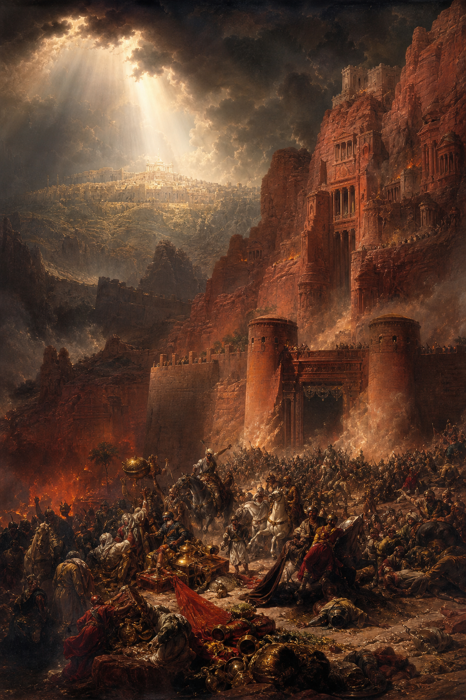

Old Testament · Book 31 of 39
Obadiah
In the Bible's shortest Old Testament book, a nation proud of its unreachable cliffside fortress learns that standing by while a brother suffers is itself a crime that will be repaid in full.
Obadiah is a single, tightly wound chapter of judgment against Edom, the nation descended from Esau, Jacob's brother. When Jerusalem fell, Edom did not just fail to help — it gloated, looted, and handed over refugees to their enemies. Obadiah announces that this betrayal will not go unanswered.
The pride of thine heart hath deceived thee, thou that dwellest in the clefts of the rock, whose habitation is high; that saith in his heart, Who shall bring me down to the ground?
What happens in Obadiah
Obadiah opens with a vision against Edom, a kingdom so confident in its mountain stronghold that it believes nothing could ever bring it down. God answers that confidence directly: no height is too high for him to reach, and no ally will prove faithful when the moment of reckoning comes, for Edom's own allies will betray it in turn. The heart of the charge against Edom is relational, not merely political — on the day Jerusalem was ransacked by foreign armies, Edom stood by watching, then rejoiced, then looted the city's wealth, and worst of all, stood at the crossroads cutting down refugees trying to escape and handing survivors over to the enemy. Because of this, Obadiah declares, the day of the LORD is near for all the nations, and Edom will be repaid exactly as it dealt with others, consumed as stubble before a flame kindled from the house of Jacob. The book closes by turning from Edom's ruin to Zion's restoration, promising that deliverance and holiness will return to God's people, their possessions will be restored, and ultimately the kingdom itself will belong to the LORD.
Why it matters
Obadiah's brevity sharpens its point: cruelty toward a suffering neighbor, even cruelty of indifference and opportunism rather than direct violence, is judged with full seriousness by God. It stands as a permanent warning against security built on pride and a reminder that how nations and people treat others in their darkest hour will not be forgotten.